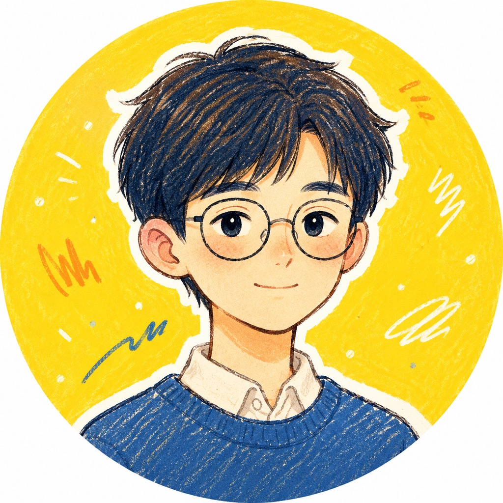

Personal IP / Trial Card
把审美写成规则
这不是一个通用模板，而是一个有头像、有颜色、有气质的个人 IP 系统。 目标很简单：让人一眼看出这是你。
日系蜡笔感
蓝黄红三色
知识型创作者

固定住的三件事
0101
头像不漂移
细边眼镜、蓝黑短发、温和表情、黄底贴纸感，作为每次生成的锚点。
02
颜色不乱跑
蓝负责主线条，黄负责高亮，红只做点睛，不让页面变成别的风格。
03
气质不变味
保留手绘、留白、贴纸边和轻知识感，避免通用模板味。